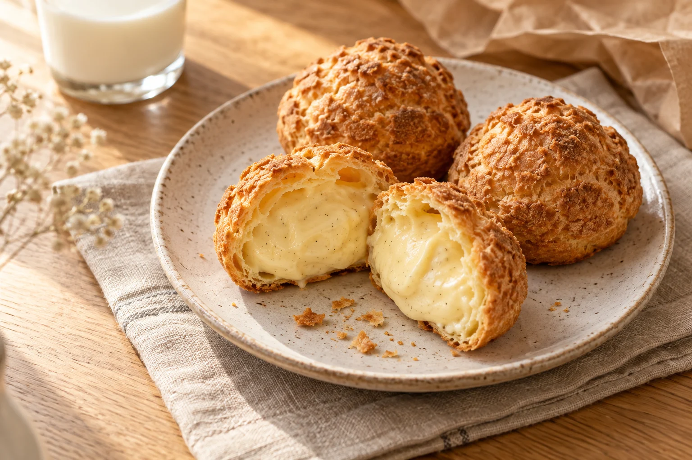

素材の味を、まっすぐに。
卵やミルクのやさしい風味が伝わる、素直なおいしさ。毎日食べたくなる味わいをご紹介します。
OUR STORY
ひとくちで笑顔になれる。そんなシュークリームを目指して。

OUR PHILOSOPHY
学校からの帰り道。家族がそろう午後。
大好きな人に会いにいく日。
特別すぎない、けれどちょっと楽しみな存在。
そんな街のおやつ屋さんを、想い描いています。
THREE LITTLE PROMISES
卵やミルクのやさしい風味が伝わる、素直なおいしさ。毎日食べたくなる味わいをご紹介します。
シュー生地の焼き色や食感、クリームとのバランス。お店ならではの製法を、写真と言葉で丁寧に。
日常のおやつも、大切な人への手土産も。作り手の想いが伝わるホームページを目指します。
【要確認】上記はコンセプト文案です。素材の産地・実際の製法・店舗のストーリーを伺い、確かな情報に差し替えます。